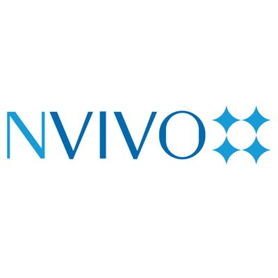

Ha Nguyen
PhD Student, STEM Teaching & Learning
I study the co-design of technology-supported learning with teachers, students, and community partners.
Current Projects
Researcher, UX Designer
Advisor: Dr. June Ahn, UC Irvine. Supported by the National Science Foundation (NSF) under Grants 1719744; 1620851; 1621238; 1620863.
Design a data visualization platform using learning analytics in a research practice partnership with teachers, coaches, and school administrators in school districts across the U.S. to help teachers improve on daily practice in Math engagement and student relationship.
Researcher
Advisor: Dr. Rossella Santagata, UC Irvine.
Collaborate with Crystal Cove State Park educators, teachers, and environmental biology scientists to develop a middle school curriculum on ecosystem, combining physical computing and modeling with community science.
Researcher
Advisor: Dr. Mark Warschauer, UC Irvine. NSF Grant 1738825.
Develop materials with linguistic scaffolding to teach computer science for upper elementary students as part of a research-practice partnership. Perform qualitative and quantitative analyses of student learning and attitudes towards computer science.
Education
University of California-Irvine
Duke University
Publications
Nguyen, H., Wu, L., Fischer, C., Washington, G., & Warschauer, M. (in press). Increasing success in college: Examining the impact of a project-based introductory engineering course. Journal of Engineering Education.
Jacob, S., Nguyen, H., Tofel-Grehl, C., Richardson, D., & Warschauer, M. (2018). Teaching computational thinking to English learners. NYS TESOL Journal, 5(2), 12-24.
Nguyen, H., Lim, K.Y., Wu, L. Fischer, C., & Warschauer, M. (2020). “I thought we said”: Perceived peer Support, discourse cohesion, and regulation in engineering design. Proceedings of ICLS 2020. International Society of the Learning Sciences
Nguyen, H., Garcia, L., Jacob, S., Richardson, D., & Warschauer, M. (2020). Reflection as formative assessment of computational thinking in elementary grades.Proceedings of ICLS 2020. International Society of the Learning Sciences
Nguyen, H., Garcia, L., Jacob, S., Richardson, D., & Warschauer, M. (2020). Elementary teachers' use of video reflections to reinforce computer science language and concepts. Proceedings of the Research on Equity and Sustained Participation in Engineering, Computing, and Technology (RESPECT), IEEE Computer Society.
Jacob, S., Nguyen, H., Garcia, L., Richardson, D., & Warschauer, M. (2020). Teaching computational thinking to multilingual students through inquiry based learning. Proceedings of the Research on Equity and Sustained Participation in Engineering, Computing, and Technology (RESPECT), IEEE Computer Society.
Nguyen, H., Santagata, R., Schmidt, D., & Warschauer, M. (2020, June). Crystal Code: Examining the Impact of Computational Modeling on Scientific Systems Thinking. Paper presented at the International Society for Technology in Ecucation (ISTE) Conference. Anaheim, CA.
Nguyen, H. (2020, April). In or Out of Sync: Funding in Early Childhood through Text Analytics. Paper presented at the AERA Satellite Conference on Educational Data Science, Stanford, CA. Best Paper Nominee
Nguyen, H., Santagata, R., & Warschauer, M. (2020, April). Co-design Dynamics in Community Science Education: Teachers, Researchers, and Community Partners. Paper presented at the Annual American Educational Research Association. San Francisco, CA.
Fischer, C., Nguyen, H., Feng, Y., Fiorini, S., Kalender, Y., McKay, T., ..., & Warschauer, M. (2020, April). Advanced Placement Course Credit and Undergraduate Student Success in STEM Gateway Courses. Paper presented at the Annual American Educational Research Association. San Francisco, CA.
Wegemer, C., Clark, H., Gyles, S., Kochmanski, N., Lee, U., Nguyen, H., ..., & Steiss, J. (2020, April). Advancing Research-Practice Partnerships: Leveraging the Positionality of Graduate Student Researchers. Poster presented at the Annual American Educational Research Association. San Francisco, CA.
Jacob, S., Nguyen, H., Garcia, L., Richardson, D., & Warschauer, M. (2019, October). Design of Computational Thinking Curriculum for Multilingual Learners. Paper presented at Connected Learning Summit. Irvine, CA.
Nguyen, H. (2019, September). Social Discourse to Promote Computational Thinking. Paper presented at the Learning Sciences Graduate Student Conference. Evanston, IL.
Nguyen, H. (2019, April). Autonomous, but Together: Elementary Teachers’ Self-Efficacy and Autonomy. Paper presented at the Annual American Educational Research Association. Toronto, Canada.
Jacob, S., Nguyen, H., Richardson, D., & Warschauer, M. (2019, February). Developing a Computational Thinking Curriculum for Multilingual Students: An Experience Report. Poster presented at Research on Equity and Sustained Participation in Computing, Engineering, & Technology. Minneapolis, MN.
Zhou, N., Nguyen, H., Fischer, C., Richardson, D., & Warschauer, M. Hybrid professional development program to promote high school teachers’ self-efficacy in computer science classroom. Revise & Resubmit at ACM Transactions on Computing Education
Jacob, S., Nguyen, H., Garcia, L., Richardson, D., & Warschauer, M. Teaching computational thinking to multilingual students through inquiry-based learning: A cross-case analysis.
Campos, F., Ahn, J., Digiacomo, D., Nguyen, H., & Hays, M. One Chart, Many Meanings: Making Sense of Sensemaking in Learning Analytics Dashboard Design.
Ahn, J., Nguyen, H., & Campos, F. From Visible to Understandable: Designing for Teacher Agency in Education Data Visualizations.
Ahn, J., Nguyen, H., Wolters, A., Cuevas, J., Baeza, K., & Su, J. Moving from Everyday Information to Practical Analytics: Designing Crowdsourcing Tasks to Systematically Process Education Data.
Teaching
R for Data Science. Workshop facilitator: Visualizations in R. February 2020. Irvine, CA.
Ahn, J., Campos, F., & Nguyen, H.. Educational Dashboard Expo. (2019, December). NSF Education Data Analytics Collaborative Workshop. New York, NY.
Ahn, J., Nguyen, H., & Wolters, A. Designing Crowdsourcing Tasks to Systematically Process Education Data. (2019, December). UCI Learning Analytics Group. Irvine, CA.
Graphs & Visualizations in R. Workshop at Center for Creating Opportunities through Education. July 2019. Irvine, CA.
Design Thinking in Education. Workshop in Design Learning Environment class, UCI Masters of Arts in Teaching Program. July 2019. Irvine, CA.
Fischer, C., Nguyen, H., & Warschauer, M. Advanced Placement Course Credit and Student Success in STEM Gateway Courses. Presentation at the Sloan Equity and Inclusion in STEM Introductory Courses Meeting. June 2019. Ann Arbor, MI.
Undergraduate Club Lightbulb Conversation. April 2019. Irvine, CA.
Computational Thinking for Educators. Lecture in 21st Century Literacies. April 2019. Irvine, CA.
Computational Thinking Research from a Design-Based Approach. Workshop facilitator at Google ExploreCSR. February 2019. Long Beach, CA.
R for Data Science. Workshop facilitator. January-March 2019. Irvine, CA.
University Scholars Durham Public School Outreach. House Course Instructor. September-December 2017.Durham, NC.
Freedom School Partner. K-2 Teacher. 2015. Charlotte, NC.
Durham Public Schools. K-6 Teaching Assistant. 2014-2016. Durham, NC.
Frydenhøjskolen. K-2 Teaching Assistant. 2016. Copenhagen, Denmark.
Skills
- 
-